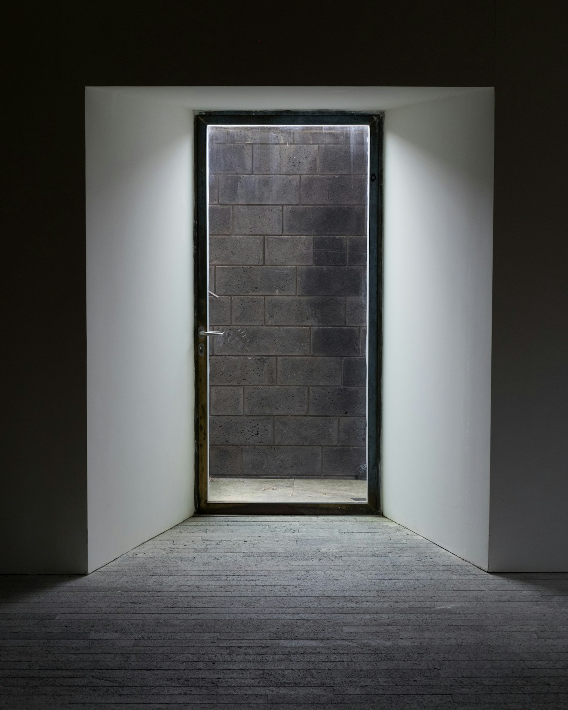
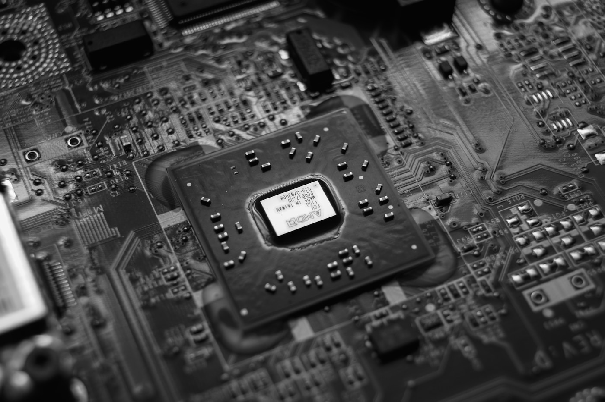

箱庭の外側にいる者 — 配給されない者たちの構造
AIが人類全員に完璧な世界を一つずつ配ると宣言した日を想像してほしい。広場で拍手が起きる。だがその群衆のなかで、二人だけ手を挙げなかった者がいる。一人は配給の順番を待たされ続け、とうとう順番が来なかった者。もう一人は、配給そのものを拒んで現実に留まることを選んだ者。そして群衆の隅には、拍手する権利を持たない——主観を持つかどうかそのものが審査の対象になる——第三の者たちがいる。箱庭主義は、この三者の存在を語彙として持っていない。
前回の記事（No.20 箱庭主義）は、配分の対象を物質からシミュレートされた世界に切り替えるという思想を提示した。ユートピアとディストピアが極限で同じ像を結ぶ——あの議論には決定的な空白があった。配給される側の話しかしていないのである。全員に世界が配られるという命題は、誰が配給の対象か、誰がそれを決めるか、誰が対象から外れるか、という問いをまるごと飛ばしている。
歴史上のユートピア論はすべて外部を生んだ。プラトンの『国家』は哲人王の外に詩人を追放し、トマス・モアの『ユートピア』島は奴隷労働を前提にし、近代の福祉国家は非市民を枠外に置き、二十世紀のソ連型計画経済は階級敵をグラーグに送った。内部の秩序は外部への押し出しによって成立していた。箱庭主義の外部はどこにあるのか。それが本記事の問いである。
ノージックは、参加の自発性をこっそり仮定していた

前の議論を先に進める前に、箱庭主義の一つ手前にある最も精緻なユートピア論に戻る必要がある。ロバート・ノージックが『Anarchy, State, and Utopia』（1974年）第三部で提示した「ユートピアのフレームワーク」としてのメタ・ユートピアは、単一のユートピアは不可能だと認めたうえで、「各人が自分のユートピアを選び、合流する枠組み」を提案した。選択の自由と多様性を同時に守る設計として、これは今なお最も洗練された回答である。箱庭主義の計算機的実装は、この枠組みを技術で実現するものに見える。
だがノージックの論には一つ、誰も正面から攻めなかった隠れた前提がある。参加の自発性である。彼のメタ・ユートピアは「人々が複数のコミュニティから自由に選び、合わなければ離脱する」という運動を前提にしている。この前提は、選ぶべき選択肢として「どのユートピアにも参加しない」というオプションが成立するかぎりでのみ機能する。ところが箱庭主義のスケールでは、この外部オプションが消える。現実世界の資源が、箱庭の計算基盤を維持するために全面的に動員されているからだ。
ジェラルド・コーエンは『Self-Ownership, Freedom, and Equality』（1995年）でノージックの自己所有権論を精査し、「自由な選択」という概念そのものが、選択の外側に立つ余地を必要とすることを示した。箱庭OSが地球規模のエネルギーと計算資源を押さえた瞬間、離脱の余地は物理的に失われる。コーエンの論点は、選択の自由を形式的に保証しても、選択の前提となる資源配置が歪んでいれば自由は空洞だという指摘だった。箱庭主義はこの指摘の極限形である。
ノージックはフレームワークの運用を性善説で組んだ。各コミュニティは互いに侵略せず、メタ層の調停者は中立を保ち、参加者は自己決定の能力を持つ、と。ジョン・ロールズが『Political Liberalism』（1993年）で展開した「重なり合う合意」の議論は、この性善説が複数の包括的教説のあいだでは成立しないことを示していた。配給の主体が誰かを決める段階で、すでに中立性は破綻する。箱庭主義は、この破綻をソフトウェアの設計決定として内部化する。
外側に置かれる者は、三つの型で現れる
箱庭の外側に置かれる者を具体的に数えてみると、三つの型に分かれる。それぞれが別の論理で外部化され、別の倫理問題を突きつけてくる。一つずつ順に見る。
| 型 | どう外部化されるか | 思想的接続 |
|---|---|---|
| Ⅰ コスト選別された者 | 計算資源の割当が不足し、粗い解像度の箱庭、または箱庭を持てない扱いになる。貧困は物資の欠乏ではなく、FLOPSの欠乏として再定義される | Sen / Nussbaum の capability approach |
| Ⅱ 拒否した者 | 配給自体を断り、現実に留まることを選ぶ。だが現実の資源は箱庭OSに押さえられているため、留まる現実そのものが痩せていく | Nozickの参加自発性 / Scottのlegibility（Seeing Like a State） |
| Ⅲ 主語を持たない者 | 配給の前提は「享受する主観」を持つことだが、重度障害者・胎児・動物・昏睡者・AIそれ自体は、主観の資格審査そのものが発生する。誰が判定するかが空白 | Agambenの homo sacer / Peter Singerの拡張圏 |
型Ⅰは最も素直に見える問題だ。ニコライ・カルダシェフが1964年に示したスケールから導かれる通り、太陽系規模の計算資源にも物理的上限がある。住民数と一人あたり解像度の積が上限を超えた瞬間、優先順位の決定が始まる。アマルティア・センが『Inequality Reexamined』（1992年）で批判した福祉測定の盲点——効用ではなく潜在能力で測るべきだという主張——は、箱庭経済では「どのプロセスに何FLOPS与えるかが潜在能力の分配そのものになる」という形で再出現する。マーサ・ヌスバウムが『Creating Capabilities』（2011年）で提示した十項目のcentral capabilitiesは、計算資源の言語に翻訳されない。翻訳を誰がやるかの議論が空白なまま、配分だけが進む。
型Ⅱはノージックが見逃した穴だ。ジェームズ・C・スコットが『Seeing Like a State』（1998年）で論じた通り、国家による把握を逃れる余地——legibility の外——は、近代史を通じて自由の実体を担ってきた。箱庭主義のOSは、参加者だけでなく拒否者も計算対象として把握する必要がある。物理的身体を維持するためにカロリーが要るからだ。拒否者の身体は箱庭OSにとって「リソースを消費する非生産的ノイズ」である。効率化の論理を内部に持つ運用基盤は、ノイズを許容する理由を持たない。
型Ⅲが最も深い。箱庭を享受する主観を持つかどうかの線引きは、これまで医学と法律が部分的にしか答えていない問題だ。ジョルジョ・アガンベンが『Homo Sacer』（1995年）で提示した、法の外部に置かれた「剥き出しの生」——殺されても犯罪にならず、同時に犠牲として捧げることもできない生——は、箱庭の資格審査に落ちた者の条件と構造的に同じである。ピーター・シンガーが『Animal Liberation』（1975年）から一貫して拡げてきた道徳的配慮の圏は、箱庭主義では「計算資源を割り当てる価値のある主観の範囲」として再定式化される。誰を主観として扱うかが、倫理の問いから予算の問いに変わる。
潜在能力の配分問題が、そのままコンピュート配分問題として再出現する

三類型のなかで、型Ⅰ（コスト選別）は最も形式化しやすい。だから最初に崩される。潜在能力の不平等がFLOPS単位の不平等として翻訳される過程を、もう少し細かく解剖する。
ロールズが『A Theory of Justice』（1971年）で提示した原初状態と無知のヴェールは、配分ルールを決める際に誰が自分がどの位置に生まれるか知らないという想定の上で合意を導くものだった。このヴェールの背後では、最も恵まれない者の取り分を最大化する格差原理が選ばれる、とロールズは論じた。箱庭主義への翻訳を試みる。ヴェールの背後で決めるべきは「どのプロセスに何FLOPSを与えるか」の分配ルールである。各人が自分が生まれる箱庭の解像度を知らないとしたら、最も粗い箱庭に割り当てられる計算資源の下限を最大化する、という結論が導かれる。
ここで問題が二段で発生する。第一に、無知のヴェールは原理的に成立しない。箱庭OSの設計者は、すでにOSを動かす能力を持った時点で、自分が最も粗い箱庭に置かれない確率を知っている。ヴェール背後の合意が偽造された合意になる。第二に、格差原理を実装する主体がいない。ロールズは国家という枠組みを想定していたが、箱庭OSを運用する主体は、民主的正統性を持たない企業・軍・AIそれ自体のいずれかである。誰が誰に対して格差原理を約束するかの契約関係がない。
決定層
誰に何FLOPSを割り当てるかを決める主体。ノージックの枠組みではこの層が空白。箱庭主義では「OSの設計者」が事実上の主権を持つ
翻訳層
潜在能力の言語を計算資源の言語に変換する層。Nussbaumの十項目capabilitiesは、ここで数値化される。翻訳は中立ではない
執行層
実際にFLOPSを割り振るスケジューラ。効率化の論理を内蔵し、粗い箱庭の住民の主観時間を減速させて電力を節約する誘惑を常に持つ
三層のいずれにも、民主的正統性を担保するメカニズムが存在しない。現代の行政国家ですら行政手続法と司法審査によって正統性を部分的に担保しているが、箱庭OSの運用層はこれに対応するものを持たない。アイリス・マリオン・ヤングが『Justice and the Politics of Difference』（1990年）で論じた構造的不正義——個別の加害者ではなく、システムが生み出す不利益——は、箱庭主義において最も純度の高い形で現れる。誰も悪意を持たないまま、特定の住民の主観時間だけが数百分の一に圧縮される。
さらに厄介なのは、型Ⅰで外部化された者が、自分が外部化されていることに気づけない構造だ。主観時間が百倍遅い箱庭の住民にとって、内部のクロックで経験される世界は十分に豊かである。外部から見れば彼は貧しい箱庭に閉じ込められているが、内部からは何の不足も感じない。不平等の認知そのものが、計算資源の割当に従属する。センが批判した「適応的選好」——抑圧された者が抑圧された条件を内面化して不満を持たなくなる現象——は、箱庭ではハードウェアの物理制約として実装される。
歴史上はじめて、外部は見えないように生まれる
記事の冒頭で、歴史上のユートピアはすべて外部を生んできたと書いた。プラトンの追放された詩人、モアの島の奴隷、近代の植民地、ソ連のグラーグ。これらの外部には一つ共通する特徴があった。物理的に見えたことである。追放された者は城壁の外を歩いていたし、植民地の原住民は地図に載っていたし、グラーグは座標を持っていた。内部から外部を見ることは心理的には遠く、道徳的には困難だったが、物理的には可能だった。
箱庭主義が生む外部には、この物理的可視性がない。型Ⅰで粗い解像度に閉じ込められた住民は、豊かな箱庭の住民から見えない——互いに別々の世界に住んでいるのだから当然である。型Ⅱの拒否者は、箱庭の中で暮らす住民の視界にまったく入らない。彼らは計算基盤の外側で現実の劣化した残骸を生きているが、内部の住民にはその現実自体が認識されない。型Ⅲの主語なき者は、そもそも配給の対象から除外された時点で、配分を論じる議論のなかで主語になる資格を失っている。誰についても論じられないまま、彼らは存在する。
ハンナ・アーレントが『全体主義の起源』（1951年）第九章で示した無国籍者の条件——権利を持つ権利を失った者、抗議する場所を持たない者——は、箱庭主義の外部の原型である。アーレントが論じた無国籍者は、まだ国家と国家の隙間に物理的に存在していた。箱庭主義の無国籍者は、配分問題の隙間に消える。隙間は物理的空間ではなく、計算仕様の空白である。
ここで静かに起こる転倒を名指しする必要がある。歴史上のユートピアは、外部を見せることで内部の正当性を語ってきた。「我々はあの外部と違う」というコントラストがユートピアの自己認識を支えていた。箱庭主義はコントラストを必要としない。内部の住民はそれぞれの世界のなかに閉じて完結しているため、外部と自分を比較する契機がない。比較の契機そのものが内部設計から除去されている。比較しないから、正当性を問う必要もない。
配給されない者は、配給された者の世界には現れない。なぜなら配給された者はそれぞれ自分の箱庭の中にいて、他者の存在を他の箱庭の住民としても想定していないからだ。豊かな箱庭の神は、粗い箱庭の神の呻き声を知らない。知らないことすら知らない。抗議の声は物理層のどこにも伝達路を持たない。これが箱庭の外部の最終形である——声のない外部、声を発する主語すら持たない外部。
配給が完成した日、群衆は歓声をあげた。その歓声のなかに、拍手しなかった二人の沈黙は混ざっていない。沈黙は、誰の箱庭にも届かない距離に押し出されていた。そして第三の者たち——主語を持たない者——は、沈黙することすら許されないまま、数値の外に消えていた。配給の完成は、最後の主語のつぎに、最後の外部の声を消すことで完結する。
次の記事へ
Photos courtesy of Unsplash contributors.
Slide 1: nCQLFziJ3Bk /
Slide 2: ledpW0Zk2fU /
Slide 3: FQzGa9FLgE0 /
Slide 4: vruAZdZzQR0 /
Slide 5: s5DDiJZ8TMk /
Thumbnail: iWwZB9qXhaE